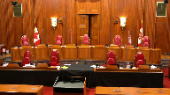

Sylvia H.C.C. Richardson v. Mark Edward Richardson
This transcript was made with automated artificial intelligence models and its accuracy has not been verified. Review the original webcast here.
Justice Wagner (00:00:25): Good morning.
Be seated.
In the case of Sylvia HCC Richardson against Mark Edward Richardson, for the appellant, Sylvia Richardson, Sean Duguay, and Lauren Wilson.
For the respondent, Mark Edward Richardson, Aaron Franks, Michael Zolev, Samantha Eisen.
Sean Duguay.
Speaker 1 (00:00:59): Chiefs Justice, Justices, good morning.
My name is Sean DeGay, Councillor for the Appellant, Mr. DeGay, Claremont Richardson.
Justice Wagner (00:01:06): Mr. Zigay, just before you start, I have a question for you and a question which is directed also to your colleagues.
The court received a letter dated October 6, 2021.
Overlapping speakers (00:01:22): That’s correct.
Justice Wagner (00:01:22): concerning a change in the, with respect to the children.
Is there a reason why you waited until October 6th to send us this letter?
Speaker 1 (00:01:34): uh certainly uh Chief Justice the primary reason was that the parties had been engaged in in discussions with respect to possibly resolving this matter uh up until a fairly late date um and leading into the sort of September and October period council for both parties were attempting to come together on language that was suitable for both the appellant and the respondent.
Justice Brown (00:01:59): But these circumstances pre-existed the granting of leave, did they not?
Yes, they did, Justice Breyer.
Speaker 1 (00:02:08): Brandon, that’s correct.
Justice Wagner (00:02:11): to change each of the files.
Speaker 1 (00:02:15): uh slightly Chief Justice but our concern was that uh particularly at that time the lead materials at the file but at that time uh the issue that was uh that issue was currently before the lower courts with Justice Ramsey.
Justice Wagner (00:02:29): I understand but maybe leave would not have been granted if we had known about the differences and the changes.
Speaker 1 (00:02:38): Certainly, Your Honour, Chief Justice, that could be the case and I apologize for the delay in providing the update.
Justice Wagner (00:02:49): Go ahead.
Speaker 1 (00:02:51): But to proceed, while this case is simple in its facts, its potential effects are profoundly serious for family law litigants who need to be able to proceed with confidence that the court will enforce settlements reached at any stage in the litigation process.
The ability to enter into settlements with confidence that the court will uphold them is of fundamental importance to litigants generally, but it is of particular importance in the realm of family law, where many parties are self-represented, where there are pressing access to justice concerns, particularly as it relates to the cost and financial burden of family law litigation, where the governing legislation promotes settlement between parties and places positive obligations on parties and courts to facilitate settlement, and where settlement by capable parents in the absence of child welfare concerns is deemed to presumptively reflect their children’s best interests.
The appellant submits that the trial decision and the majority of the Ontario Court of Appeals decision to uphold it were in error and served to undermine that confidence.
Here, in an attempt to resolve the litigation and their differences, two parents presented the court with what they agreed was in their children’s best interests.
The court rejected that settlement, provided no reasons for doing so, and substituted the parents’ determination on its own.
Justice Rowe (00:04:02): that the parties have carried on a modern version of the War of the Roses, which went on for decades, as you will recall, and are blaming the courts for what is really caused by the over litigiousness of the parties, which I think is a dubious proposition.

Proposition.
Speaker 1 (00:04:25): Well, I don’t necessarily disagree, Justice Roe, that this has been a very litigious family law file.
I think that some credence needs to be given to the fact that where the parties had actually broken through that level of conflict and reached a point where they were willing to concede and willing to reach an agreement, that’s what should have been given effect by the parties.
Mr. DuGay?
Justice Kasirer (00:04:50): Thank you very much.
Overlapping speakers (00:04:50): Check by the park.
Justice Kasirer (00:04:51): and should have been given effect by the court.
Mr. Duguay, why then, after the trial judge had said that he wasn’t going to, um, he wasn’t going to give, uh, give, uh, effect to the proposed settlement, why did Ms. Richardson, um, ask in the subsequent proceedings and including in the closing submissions for terms that would have been different from the settlement agreement, and indeed terms that would have been far more favorable to her than in the settlement agreement?
Doesn’t that indicate a bit, as my colleague suggests, that things were on shifting sands.
There was a fair bit of aggressiveness here, and maybe not such a firm sense as to where things had landed in mid-trial.
Speaker 1 (00:05:51): Well, just to first respond to that sort of shifting SANS argument, I would give reference to the FJV case from the BC Court of Appeal, in which the SANS were shifting in that case, whereby the father, once the court had rejected the proposed settlement, sought to resile from it.
But the BC Court of Appeal continued on and carried on with it.
In this case, that really touches on, Justice Kayser, on the points made by the majority and by the respondent with respect to the appellant’s strategic choice to continue on with the trial.
And I would submit that that doesn’t apply necessarily to the first two issues that we raise in this appeal with respect to the exercise of the court’s discretion and with respect to the absence of reasons.
And if we look at the specific comments made by the trial judge, this is at tab five of our condensed book.
Sorry, Mr. DeGay.
I’m sorry.
Justice Kasirer (00:06:39): It’s rude of me to cut you off, but my question was actually rather more specific.
When the trial judge did not give effect to Ms. Richardson having final decision-making authority as between the children and granted Mr. Richardson’s request for that authority, there was, that dimension of the agreement was, is the one that I’m speaking to.
She asked that the order be made in a way that departed from the agreement.
And so I’m wondering just how solid things were at that mid-trial moment.
Speaker 1 (00:07:28): So what we have, Justice Casper, to give effect to how solid they were was the signed agreement by the parties that they were prepared to enter into and were prepared to have govern the best interests of their children.
And so while the trial continued for the remaining two days and while the appellant continued on with what her position was in her pleadings, that was merely a function of needing to proceed on with the trial.
And so when I refer you to the comments made by the trial judge, I do that with respect to the comments made with respect to him not really being able to say why he rejected the settlement and needing to hear all the evidence, which from the appellant’s perspective meant that reasons may have been provided for why that that settlement was rejected.
And so until those reasons were provided at the conclusion of the hearing, and in this case they were not, what the appellant was left with was to proceed on with the trial in the fashion that both parties had intended.
Justice Côté (00:08:23): But Mr. Deguy, each of the parties could have asked the trial judge for specific reasons because he asked, and this is in your condemned book, he asked the parties if they wanted a few minutes.
Madam’s counsel said yes.
The judge gave ten minutes and after that they came back and nobody asked for more particulars about the fact that the trial judge had decided not to sign off the settlement.
So does it have any importance or not?
Speaker 1 (00:09:00): I think it may but solely with respect to the question of the objection on the basis of his awareness of the settlement contents you know there may be some relevance to that in that action wasn’t taken immediately to say Justice Ramsey you should recuse yourself on the basis of this information that you’ve now received however I submit that it doesn’t apply to the first two issues that that are raised by the appellant namely that the trial judge’s rejection of the settlement itself was an error and the failure to give reasons to do so was also an error and I would submit your honour Justice Cote apologies that it is reflective in the communications here that the trial judge is representing that he needs to review the additional evidence and then will respond accordingly as part of his reasons which never occurred.

Justice Côté (00:09:50): But do you make a distinction between the settlement agreement presented to a judge for approval outside of a trial and the context here where the trial judge had evidence for two days when the settlement was presented to him?
Speaker 1 (00:10:09): possibly, but the real distinction there, Justice Cote, is really with respect to the steps that the trial judge suggested to take.
If admittance of settlement were received at a pretrial, for example, like in FJV, then the circumstances play out essentially the same.
That judge that was at the pretrial in FJV couldn’t have then gone on to make the decision at the hearing.
But here, the information that was received, we submit, is analogous to what would be discussed in the confines of those settlement conferences or pretrial conferences, and in the nature in which that information was conveyed and the timing in which it was conveyed, and the fact that no reasons were provided by the trial judge to explain away how he had compartmentalized that information, that it’s not sufficient simply to say that there was no objection raised at the time.
Justice Brown (00:10:57): I’m going to switch gears with you a little bit.
In paragraph 97 of your factum you ask us to grant an order approving the minutes of settlement.
Is that still the order that you’re seeking in light of the circumstances you described in the latter of October 6th of this year?
Overlapping speakers (00:11:16): Certainly, Justice Brown. Really?
Justice Brown (00:11:18): So you’re going to force a 10-year-old boy who’s been living with his father to up and move to Ottawa?
Speaker 1 (00:11:26): So the the request is premised, Justice Brown, on the fact that one of the central factors we feel that is in the best interest of these children is to be together.
And this is a fact that’s noted in Justice Ramsay’s decision when he’s making his findings.
He notes the role that the daughter had played in terms of being a steward for the son and playing a positive role in the son’s life and their relationship we would submit is of central importance.
And so more so rather than what the appellant wants or what the respondent wants, it’s important that these children reside together.
Justice Karakatsanis (00:11:57): Mr. Dewey, I think it sounds as if what you’re asking us to do is make a fresh determination of what we think is in the best interest of the children.
Whatever happened in the past, it’s pretty clear that there’s a significant change of circumstances now.
And that makes it very difficult to determine what the best interests of the children are certainly for us sitting in this court.
And it makes it difficult to determine it by reference to the settlement or what happened at trial.
Given your letter, we’re in a completely different situation.
So what is the appropriate order?
Is it the status quo pending any further order?
Should we just be remanding this back to the superior court?
If we take the view that we sitting here in Ottawa cannot make a determination of what is in the best interest of the children in what is obviously a very different circumstances, what is it that you would propose we do?
Speaker 1 (00:13:03): So, Justice Kertke-Tannis, the appellant submission is that we should give effect, the court should give effect to the minutes of settlement and the agreement that the parents entered into with respect to the children’s best interest.
While circumstances have changed and while the daughter is now here in Ottawa, we’d submit that that’s still a reflection of what the parents, you know, in their crystallized agreement expressed was in their children’s best interest.
Two and a half.
Justice Brown (00:13:28): years ago, two and a half years ago, which is a quarter of the life of the younger child.
Are you are you seriously submitting that we should just take that as reflective of the best interests of the child right now?
Well, I guess you are.
Speaker 1 (00:13:47): That is the submission Justice Brown. Yes
Overlapping speakers (00:13:49): It’s
Speaker 1 (00:13:49): The alternative relief sought by the respondent is, of course, for the appeal being granted and a new trial being directed in the Superior Court.
However, the concerns we have with that strike really just strike against, one, continuing the ongoing litigation of the War of the Roses, as Justice Rowe described, between these parties, and alternatively, the need to finally give these children some finality.
Justice Brown (00:14:18): Well, those are hardly the only two options, are they?
Justice Kara Katsan has listed a few others.
Speaker 1 (00:14:27): certainly.
And so just to proceed, our submission is that without the intervention from this court, this decision will stand for the principle that this type of rejection of these minutes of settlements without reasons is permissible.
And we submit that this will act as a strong deterrent against settlement running contrary to one of the foundational objectives of family law in Canada.
As a practical reality, when two parents reach an agreement over the future of their children, present that to the court, there must be a strong and compelling reason given for departing from that agreement, and that reason must be communicated to the parties.
In her factum at paragraph 45, the appellant poses two questions to this court on this appeal, both of which are closely tied to the role that settlement between parties plays in the broader family law context.
The first, in family law proceedings involving parenting issues, when is it appropriate for courts to reject parties’ reasonable settlement agreements, and what are the standards for rejecting such settlements?
And second, when, if ever, is it appropriate for a trial judge to continue to sit on the trial after being privy to the parties’ settlement positions?
In refocusing these questions on the circumstances at hand, the appellant submits that this case clearly demonstrates where the boundaries of those questions are located and stands as a stark example of where the discretion to set aside a settlement agreement reached by competent parents has been misapplied.
More specifically, the appellant submits that first, there was no clear and compelling reason supporting the trial judge’s rejection of the party’s minutes of settlement, and that the exercise of the court’s discretion to do so was an error.
Secondly, that the trial judge’s failure to provide any reasons for his rejection of the minutes of settlement compounds this error, denies the party’s procedural fairness, and necessitates intervention.
And finally, that the trial judge’s decision to continue on with the trial armed as he was with the knowledge of the party settlement position on the core issue and dispute further compounded this error by undermining the appearance of fairness to both parties, a point which is further exacerbated by the lack of reasons.
At its core, this was a mobility case where the central issue was the binary choice of whether the primary residence of the children should be with a respondent in the Niagara region or with the appellant in the Ottawa area.
As part of the minutes of settlement, the parties agree that it was in their children’s best interest to relocate to the Ottawa area with the appellant with generous parenting time provided to the respondent.
The minutes put forward a detailed plan of care, set out a reasonable care schedule that maintained regular contact with the respondent, and also reduced the overall amount of travel that the children were subjected to.
The trial judge rejected the proposed minutes of settlement, ultimately completing the trial and releasing his decision.
That was not only the binary opposite of what the parties had agreed was in the children’s best interest, but which went beyond the respondent seeking in terms of relief.
And not only were there no clear and compelling reasons provided by the trial judge to support this rejection of the settlement, but no reasons whatsoever were provided to allow the parties to understand why their proposal was rejected or why this better served the children’s best interests.
Notably, the evidence at trial was that both parents were competent and capable and that they both cared for and loved for their children.
Added to this, in previously endorsing the original order of Justice Carpenter Gunn, the court implicitly endorsed the fact that these parents were already fully capable of making these decisions on a part of their children.
Flowing from this, there’s nothing in the record that justifies the rejection of the parties settlement agreement.
Instead of promoting one of the primary objectives of Ontario’s family law rules by encouraging and facilitating this settlement made by two fully competent parents, the trial judge acted as a barrier to that settlement, effectively removing the party’s agency to make decisions with respect to the best interests of their children and furthering the conflict and litigation in this family.
Justice Rowe (00:18:01): Now, you’re making, it seems to me, two points that twine around one another, and I understand they are interrelated.
One is that it wasn’t, your submission is, there was an error in principle to fail to give reasons, and the other one was that in the circumstances of the case, the refusal to give effect to the settlement was an error of a nature which should be reversed on appeal.
It’s not really quite the same point, is it?
Speaker 1 (00:18:35): No, the two distinct points there Justice wrote, you’re correct.
And so with that in mind, I’ll turn to the first point, which is the sort of first instance where this, where the sort of issues here arise.
And that’s that when the child judge exercised his discretion to reject the minutes of settlement without reasons, doing so was an error.
And so there are two specific components of this, as you’ve suggested.
And so the first deals with the trial judge’s discretionary decision to reject the settlement itself.
And the second component deals with the failure to provide reasons.
And so there are a number of fundamental principles that underpin what the appellant is submitting with respect to the trial judge’s operation of that discretion.
And so firstly, there’s the foundational notion that the decision to reject the minutes of settlement is one of discretion.
And the BC Court of Appeal in FJV, which is at tab eight and page 45 of our condensed book, at paragraph 45, they highlight the nature of this decision as being discretionary.
In conjunction with this discretionary decision is the obligation placed on courts in Ontario under Ontario’s family law rules, and more specifically Rule 2 sub 5 sub C, which provides a positive obligation to promote the primary objective by encouraging and facilitating the use of alternatives to the court process, and by helping parties to settle all or part of their case.
Accompanying this is the presumption at law that capable parents know what is in the best interest of their children.
This is a longstanding presumption articulated by this court in B and R, the Children’s Aid Society of Metropolitan Toronto, which is at page 59 in our factum.
And this is premised on the fact that parents know their children in a way that courts cannot, and they may have information that courts cannot when they’re making their decision.
And then taking one step further-
Justice Rowe (00:20:29): Unfortunately, unfortunately, parents being individuals and with all the complexity that goes with that, also have motivations that extend beyond their knowledge of their children, and sometimes those motivations relate to interpersonal relationships, really which kind of get brought out on a marriage breakdown.
And thus, what one ordinarily assumes to be the love and caring of a parent towards a child can be clouded by anger and frustration and even perhaps a desire for revenge.
And thus, the court retains a responsibility which goes beyond the views expressed by the parents, does it not?
Certainly, we agree with that, Justice Rowe.
Speaker 1 (00:21:28): We’re not saying that the court does not in any circumstances have the necessary authority to exercise this discretion.
What our submission is, is that this is not that case.
In some instances, certainly as you suggest, there are concerns with the nature of a decision that parents are making for their children.
And one step further, there may very well be issues that involve the state’s intervention, such as child protection proceedings, where certainly an agreement between parents isn’t going to satisfy the court that the children’s best interests are being promoted and reflected.
But in this case, we have two competent and capable parents who have entered into previous settlement agreements with respect to their children in the midst of the previous trial.
In the midst of this trial, they do the same in light of the circumstances that have changed, namely mom relocating from the Niagara area to the Ottawa area.
And they put that agreement forward to the court.
And what we submit is it’s the court’s discretion to say no to that settlement without providing reasons for why that is in the children’s best interest that strikes the heart of why the trial judge’s decision was an error.
Justice Brown (00:22:33): One of the things that I think family court judges rightly try and do is try to avoid in giving reasons a degree of candor that might reflect badly on one parent or the other for fear that someday the child might get a hold of the decision and read it and discover all kinds of frankly crappy things about about one or another of their parents.
Do you think that might have been motivating this judge in this case?
I mean it seemed to me looking at what was in front of the judge at the time including all those emails that he had formed a pretty negative view of one of the parents in this case and and may not have wanted to be so candid.
Now maybe that was that was a fault on on the trial judge’s part
but but maybe an understandable one and speaks to a level of delicacy that needs to be applied.
Speaker 1 (00:23:40): I’m not certain if that’s applicable here, Justice Brown, and I don’t disagree that family courts are often required to be delicate in the way that they treat this information.
And the reason that I suggest that is that even if we accept those findings as true, you know, the concerns that the trial judge had with respect to credibility and the concerns about the emails, there’s nothing that flows from that or flows from the reasons that suggest that it would be in the children’s best interest to be with one parent over the other.
The central concern that arises in Justice Ramsey’s reasons, it really seems to focus in on the frequency of travel because at the time the decision was being made, the parents were still doing an equal time care schedule or as close to it as they could gather despite living in separate cities.
And it was that which the, you know, the trial judge really focused in on and determined was not necessarily in their best interest.
But the overarching determination, the binary issue that’s at the core of this case is whether or not it was in the children’s best interest to give effect to this agreement or not.
And in the absence of some very strong and compelling reason why it wasn’t appropriate to do so, and I would submit it’s not enough to say, well, I think, you know, how mom carried herself with respect to some of these emails is not appropriate.
You know, it goes deeper than that and it strikes at those foundational presumptions that I discussed very briefly.
Justice Kasirer (00:25:02): Excuse me, Mr. Duguay, those foundational presumptions must extend beyond the easy examples that you give, that the incompetent parent, the parent who’s got issues with the child welfare authorities and the like.
The delicate circumstance that Justice Brown raises is just that, that when one has to choose, given a mobility circumstance, when one has to choose between two competent parents, how does one do that in a manner where you’re deciding best interest, but that you don’t want to disparage, you don’t want to disparage one or another of the parents unduly, which of course would have an effect not only down the road if someone was to, a child was to consult the record, but maybe even the next weekend when the time comes for the parents to do the trade-off of the children on Friday night at the Big Apple or whatever it was in the agreement that it was mentioned here.
Speaker 1 (00:26:13): And so the concern we have with that, Justice Kessler, is the same that I explained to Justice Brown, and that’s that, you know, while there is some light between, you know, the sort of more extreme examples that I promoted and sort of where we are in this case, there really isn’t indicia here of something that would necessitate that being a bad choice for the children if the parents agreed it was in their best interest.
And that’s what strikes to the heart of this.
And that’s something that’s sort of reflected very clearly by Justice Nordheimer in paragraph 84 of the dissent, where he says, my colleagues say that no error in the trial judge’s findings and conclusions regarding the children’s best interest has been identified.
That conclusion overlooks the striking fact that the parents of the children had mutually agreed to a resolution that involved the diametrically opposite result for their children.
That would appear to be a most powerful reason to doubt whether the result arrived at by the trial judge was actually in the best interest of the children.
And then he ties that back to the BRN Children’s Aid Society of Metropolitan Toronto decision from this court.
Justice Moldaver (00:27:19): Absent hearing two days of evidence, I might agree with you, but it seems to me that this trial judge has heard two days of evidence and I sense that what is going on here is that he has nagging concerns about whether giving custody of both children to the mother might lead to a much more serious problem of her poisoning or attempting to poison the children against their father and and so this is difficult for the trial judge to Sort of Indicate on the record He’s heard two days of evidence.
He knows it’s not going to be that long a trial He wants to hear a bit more.
He wants to hear a bit more in the potential coming to a potential view that his initial concerns are not warranted and That he should back away from this and effectively Give effect to the Settlement agreement, but what what’s wrong with the trial judge?
in those circumstances doing what he does I Just I’m having real trouble with this because is the trial judge is to ignore what he sees and hears in the courtroom and Just put that completely aside even though it’s causing him or her real trouble To just say okay.
Give me the agreement boom rubber stamp That the way trial judges should behave
Speaker 1 (00:28:53): Certainly not, Justice Moldaver.
What I would suggest would most likely be the most practical outcome in the context of the family law courts is to communicate what the rationale is behind the rejection of that settlement and attempt to facilitate a settlement in accordance with the principles outlined in the family law rules with respect to that.
Justice Moldaver (00:29:15): You would have said, you would have said, if the trial judge had come out and said what I just said to you, I’m having concerns about what I’m seeing in the mother, and I’m having concerns about her credibility and her reliability and her overall sort of approach to this whole thing and how she feels about the, her husband, and, and I’m really worried here about this concern.
I have a concern about her poisoning the children.
You, you know, would you have sat back and said, okay, go ahead, judge, we’ll, let’s just carry on with the trial, or would you have said, look, you’ve got to recuse yourself now.
Speaker 1 (00:29:51): Well, if certainly Justice Moldaver, if if it was to that extent and described in that fashion, certainly that would be that would be the step to take.
And that’s something noted by Justice Nordheimer in saying that, you know, that may have been the appropriate step to take recuse himself and then find another judge to carry on the remaining two days of trial, which could have been done at minimal cost and expense to the parties and may have allowed them that opportunity to facilitate a settlement.
For, for, for an experience.
Justice Rowe (00:30:16): Marianne’s trial judge who’s now on the court of appeal.
I just feel like perhaps Justice Nordheimer’s memory of being a trial judge is fading rather rapidly.
There’s practical considerations here that I must say I don’t see reflected in the reasons.
Speaker 1 (00:30:36): Well, to that point, Justice Roe, had there been reasons articulated by the trial judge to explain this, it may have given us more to work with in terms of assessing whether that discretion was appropriately exercised.
And so I turned out to look at what the majority says in terms of the sort of suggested framework about how a judge should treat these circumstances, which they then don’t apply to the trial judge in this case.
And so in paragraphs 26 and 27 of their decision, they emphasize that the discretion to reject these settlements must be exercised with caution.
They express that mere disagreement is insufficient.
They express that the operation of this discretion requires consideration of more than just the terms of the contract itself, but the general benefit of compromise and negotiated resolutions to children.
And then they also emphasize the need to provide reasons to support why this was rejected and why settlement was not facilitated.
And so if, as you suggest, Justice Moldaver, there is a reason why settlement wouldn’t have been functional or why the concerns you’ve expressed, which I don’t feel are reflected in the trial judge’s reasons, he should have at least given reasons, this is why I can’t facilitate settlement.
I have these concerns, x and y.
But he didn’t do so, and he left the parties with it.
Both parties were represented. Sorry.
Justice Moldaver (00:31:55): by council both parties could have said could we please have some particulars because we really are eager to try and settle this and if your honor has concerns please let us know in general terms at least so that we can take steps to try and alleviate those concerns none of that nor is there any mention about you’ve got to recuse yourself now judge because you saw the minutes of settlement
I mean I just find the whole thing remarkable that this seems to be a situation where you don’t say anything you don’t do anything and then the case goes badly against you and you say aha I got you
Speaker 1 (00:32:38): So, I would disagree, Justice Moldaver, particularly as it relates to the first two issues in dispute.
And so that’s the judge’s operation of his discretion to reject the settlement and his failure to provide reasons for doing so.
And so where, as here, you have those two issues live, you know, it wasn’t open to the appellant to know that no reasons would be provided and it wasn’t open to her to know that what the basis was for the judge’s rejection of this settlement agreement.
Justice Côté (00:33:07): The reason was because when we read what he said, he said, I cannot really say why.
He does not say, I don’t know why.
He said, I cannot say why.
So I referred to what my colleague Justice Brown said before.
And he says, I just have to hear all the evidence.
Maybe the reason for which he was not prepared to sign on, he needed to hear more in order to make a final decision about what was in the best interest of the children.
So of course he could have said more.
And the majority of the Court of Appeal acknowledges that too.
But here he said, I need to, I have to hear all the evidence.
So practically speaking, you understand that he is not in a position to make a final decision yet.
Speaker 1 (00:33:53): And Justice Cote, that’s precisely the point, so he’s expressed that to the parties to say that he’s not, he can’t say why at this point in time that he’s not prepared to accept that settlement.
And so what follows then is the trial proceeds to its conclusion and the reasons are delivered, but the reasons don’t reflect or at all discuss the rejection of the minutes of settlement or the, or really go into any detail about why the finding that the trial judge has made should override that, that, that presumption that… How about reading between the lines?
Justice Moldaver (00:34:27): in terms of the findings of fact he makes that aren’t very complimentary to your client.
I won’t go further than that.
You know exactly what I’m talking about.
And I don’t like this whole notion of lying in the weeds and then waiting to see the result, having credibility findings made against you, having comments made about the behaviour of your client throughout and then saying oh this is terrible.
You know it just smacks of opportunism to me
and I don’t think and games playing
and I don’t think that’s what we should be doing in courts of law.
Speaker 1 (00:35:16): Well, and Justice Muldiver, I would agree that that’s not what we should be doing, and particularly in the family law courts, that’s not what we should be doing.
And so we’d submit that when it comes to the operation of that discretion and the failure to provide reasons, the point in time for the appellant to raise those concerns was when she had the decision that explained them.
And what we submit is that the reasons were insufficient in explaining why that discretion was appropriately exercised and why, again, because there’s no reasons at all, that affords the parties procedural fairness.
Justice Brown (00:35:48): I’m gonna shift gears on you again, Mr. Duguay.
In voir d’oeuvres and criminal trials, trial judges hear all kinds of what turns out to be inadmissible evidence.
In fact, the purpose of the voir d’oeuvres to determine the admissibility of the evidence.
Does the knowledge of the trial judge, of that inadmissible evidence, compromise, as Justice Nordheimer put it, the fundamental requirement that the trial judge decide the case based only on the evidence that he or she heard?
Speaker 1 (00:36:23): In all cases, absolutely not.
In this case, I would submit that it does reach that level, Justice Brown. And so-
Okay, well, can you describe-
Justice Brown (00:36:32): Can you describe a criminal voir dire case where that might be the case?
Speaker 1 (00:36:39): Well this is where it becomes distinct Justice Brown you know quite significantly and and the reason that I say that is it’s more in line with with Anthony Cook in terms of the joint submission on settlement and so it gets difficult here but the underlying principle is that what is at operation here is that judges who are in receipt of knowledge with respect to party settlement positions you know and other sort of privileged details relating to settlement should not then decide on those issues.
Justice Brown (00:37:10): Well, sorry, sorry.
I mean, you just kind of skated over here.
Knowledge of settlement positions and other sort of details.
What’s been given to this judge is a conclusion.
Here is what we have settled on.
Nothing about the discussions that got us there, right?
The judge is being asked to perform an adjudicative function, which is to give an order in the terms that the parties have settled upon.
Nothing more.
So, I mean, for example, do you not accept that there’s a distinction between that and the settlement conference judge who rolls up their sleeve and gets into the muck with the parties and tries to lead them to settlement?
Speaker 1 (00:37:56): certainly in Justice Brown and there is that distinction and you know more importantly the rules specifically codify that that judge who rolls up their sleeves and gets into it is automatically disqualified the rules differ province to province but Ontario it’s a it is a
Justice Brown (00:38:11): is that judge knows of what you described, of the positions that parties took in settlement and of all these other sort of details, but the trial judge doesn’t know that.
Speaker 1 (00:38:22): So our submission, Justice Brown, is that the nature of the information here that he received laid bare all the cards that the parties had on it.
Overlapping speakers (00:38:33): It was a comprehensive, it was a comprehensive settlement.
Speaker 1 (00:38:35): It was a comprehensive settlement on all issues so everything from the central issue with respect to where the children would go down to communication between the parties and so this judge was then armed with complete information about all aspects of what these parents had agreed was in their children’s best interest and I would sort of touch on one point that the the majority makes on this but but doesn’t apply and that’s the the fact that no reasons were provided with respect to you know how this how this operated and so in that you know in the present case what the majority describes is short reasons could be given brief reasons could be given with uh you know i’m not talking about the
Justice Brown (00:39:19): I’m talking about the position that you’re taking, starting at paragraph 83 of your factum, that it was an error for the trial judge to continue with the trial knowing of the terms the parties had settled upon.
Speaker 1 (00:39:35): So, Justice Brown, just to finish my point there, the information that he ended up receiving was analogous to what a settlement conference judge would receive.
While his role there wasn’t the same, he didn’t roll up his sleeves and get involved, although that option was open to him under the principles of the family law rules, the information that he received was at the core of the party’s dispute.
Overlapping speakers (00:39:59): So…
Speaker 1 (00:40:00): And so what flows from that is an appearance, at least, you know, on the part of the losing party, that he may have prejudged the case as of the point in time that he’s received the the minutes of settlement, and on the winning party, on the respondent’s position.
Justice Brown (00:40:17): That may be a perception, but it’s an unreasonable one in light of the presumption of integrity.
Justice Wagner (00:40:25): And the judge will recuse himself or herself always when there’s a perception by one of the party?
Justice Brown (00:40:32): Not serious.
Yeah, there’s a way to judge shop post facto.
Speaker 1 (00:40:37): And that’s certainly not the submission Chief Justice.
Well, of course it’s not.
Justice Martin (00:40:44): May I ask a question about procedure here just for a moment which relates to at the point in time when the judge said that he wanted to hear more evidence is there is it open would it have been open to both parties here to have withdrawn the application that was before the court that prompted the trial that would have seized the judge with this and just to say no we’re going to be content with our minutes of settlement we will no longer engage in the trial
Speaker 1 (00:41:21): Hypothetically, possibly, Justice Martin, but the issue arises from the fact that this is in the context of a motion to change and that there is an existing court order in place with a specified schedule that is requiring to be changed.
Justice Karakatsanis (00:41:40): Can I ask you, I’m sorry to come back to this, but the courts below agreed that a trial judge should exercise caution before rejecting a settlement proposed by the parties.
They agreed that the trial judge should normally give some reasons.
And I think you just agreed that recusal is not always necessary.
So it seems to me that the issue in this case is really how those general principles in which there seems to be agreement, how they actually, the live issue is how they impacted in this case.
But I come back to my previous question, given that the circumstances of this case have fundamentally changed, I mean, what can we usefully add to the general principles when, in fact, the result in this case is driven by different circumstances altogether?
Speaker 1 (00:42:41): Well, Justice Kerikatsanis, what we would suggest is that clear direction is needed to provide guidance for when it is appropriate to exercise this discretion.
And so when is it appropriate for a court to say, you know, the best interest is Trump in this case, and even just procedurally speaking, what is the framework here?
And so there’s a slight distinction between the minority and the dissent in terms of the necessity of reasons.
It’s a must versus a should, and we take the position in our submissions that it should be a must.
But it becomes of particular importance when we look at the changes to the Divorce Act and the introduction of the new section 16.6 sub 1, which codifies this now on a national level.
Justice Karakatsanis (00:43:23): But I guess my question to you is, what do you disagree with there?

What do you think needs to be said?
The, the, both judgments below talked about the need for exercising caution, that the settlement itself is evidence of what certain of, evidence of the best interest of the child that needs to be taken into consideration.
The divorce act now makes that presumption clear.
The rules make that clear.
I mean, what is it that you disagree with all of that?
I’m just trying to figure out what more is required.
Speaker 1 (00:43:56): So really, Justice Karakatsanis, it’s just an emphasis on that reasons must be provided as opposed to should be provided if all those circumstances are met.
And then again returning to the facts of this case that they were not appropriately exercised in this case which which leads to the appeal.
Justice Karakatsanis (00:44:14): You’re saying there’s no circumstance in which reasons wouldn’t be appropriate?
What if it’s obvious to the parties what the reasons are?
I’m not just quite apart from this case.
What if there is another case where based on the discussions it is very clear why the settlement has been rejected.
Speaker 1 (00:44:35): So this sort of is a parallel to FJV, in a sense, Justice Karakatsanis.
In that case, you know, there wasn’t a written reason with respect to, you know, to why the judge disputed the agreed-upon settlement.
What there was was a discussion between counsel and there was a transcript that sort of set out those reasons.
And the BC Court of Appeal in that case said that they weren’t insufficient and that they didn’t, the trial judge, or the judge in that case, didn’t consider the information that, the overall benefit to the children of a negotiated resolution.
Justice Jamal (00:45:10): Mr. Duque, may I ask a question?
Your argument about recusal proceeds on the basis that the settlement agreement is privileged, and the settlement agreement, of course, is a contract, and there may be very many reasons why people don’t want their settlement agreements to be public or to be admissible in court, but to hear that the parties actually tendered their concluded agreement in court, and one of the recognized exceptions to the settlement privilege being privileged is when parties seek its enforcement.
Isn’t that really what happened here?
The parties actually, in effect, waived their, any inadmissibility regarding the contract by tendering it in court and asking for its approval.
So that is to say, some settlement agreements may be privileged and inadmissible, and others may be admissible, and here, if it was tendered, surely that undercuts the role of inadmissibility that normally attaches.
Speaker 1 (00:46:06): And it certainly may, Justice Jamal, where that sort of discussion comes from is the later discussion that occurs during the examination in chief with Mr. Richardson, where his counsel says, okay, well, I’ll walk you through.
Why was it that you were prepared to agree to this?
And the trial judge shuts it down and says, no, this is privileged information.
So it’s with that in mind that we’ve put into our factum and put into our argument that the trial judge is viewing this as privileged information.
So to continue on, I’ll just talk briefly about the application of those principles we discussed to the specific circumstances in this case, just to give some sense of how we feel the operation of discretion that was inappropriately exercised.
And so, firstly, at the most base level, the trial judge’s actions with respect to the settlement were in direct contravention of his obligation to help the parties settle their case under section 25C of the Family Law Act.
If there are issues with the settlement, they could have been easily communicated to the parties and the possibility of addressing those concerns could have been canvassed.
The trial judge’s actions here undermine that principle.
Secondly, the trial judge overlooks the well-established principle at law that in the absence of concerns about the parents’ ability to care for their children, they’re presumed to be best positioned to determine those best interests.
Third, the trial judge provides no rationale for why his determination of the best interests of the children should supplant the parents’ determination or why it was necessary to restrict their decision about the children’s best interests.
While the trial judge did make findings of credibility and ruled on the question of whether a material change had occurred, there’s nothing in his reasons we submit that provides sufficient grounds for overturning this consensual agreement arrived at by the parties.
Apart from the trial judge’s concerns about the frequency of travel, which could have been raised with the parties and possibly facilitated, there’s nothing in his reasons or the opponents’ submits in the record as a whole to suggest that if the parents agreed that the children should go to Ottawa, that that would not be in their best interests.
Fourth, the trial judge gives no consideration to the potential beneficial effects to the children in having a settlement agreement.
In parallel circumstances in FJV, the BSA Court of Appeal found that this was a clear error on the part of the trial judge, sorry, on the part of the judge when rejecting a signed parenting agreement.
And fifth, without the trial judge providing reasons for why the settlement was rejected, it’s impossible to accurately determine whether the trial judge properly exercise this discretion.
Despite taking no action to remedy the error, the majority at paragraph 27 correctly identifies its impact by saying that without explaining the basis upon which the party’s settlement is rejected, the judge leaves the parties with no way of knowing what, if anything, they could do to address the court’s concerns.
The concerns may well have been a nature that the judge had not yet fully understood.
The concerns may well have been a nature that could be addressed, but in the absence of reasons, the parties will have no opportunity to address them.
This is a principle that the appellant agrees with, but what she disagrees with is the fact that it wasn’t applied to the circumstances in her case by the Court of Appeal.
Combined, the appellant submits these five issues, arising from the trial judge’s use of his discretion, make it clear that his decision to do so was an error.
And so, the operation of this discretion is utilized infrequently, and there’s very little case law on the appropriate use of this discretion, which we can use to compare the actions of the trial judge too.
One such example arises in FJV and WKS, where the British Columbia Court of Appeal considered an appeal from a decision which the judge had declined to approve a consent order just prior to trial, after considerable deliberation with counsel.
And the reasons that the appellant had not yet fully understood the considerable deliberation with counsel, and the reasons for that in FJV were that the consent order delegated authority on a key decision making matter to a parenting coordinator, but it also left open a question of who the children’s counselor would be.
The lower court judge found that these two things being outstanding was contrary to the best interest of the children.
The BC Court of Appeal then acknowledged that the lower court’s exercise of this discretion was entitled to deference, but nonetheless allowed the appeal and approved the settlement, noting that by failing to give appropriate consideration to the benefits that a settlement would bring for the children in this contested litigation, he was an error.
And respectively, we’d submit that the same errors that were inherent in FJV with respect to those considerations hold true in this case.
Another example is Hayes and Hayes, which is tab nine of our condensed book, where the court rejected a proposal that would separate children between the parents on the basis that there was no evidence provided about how this plan would be in their best interest or any evidence with respect to whether that arrangement was within the child’s children’s views and preferences.
And again, it stands in direct contrast to the current circumstances and the practical reality where we are currently located.
But there’s one other case that arises and this time in the respondent’s factum at paragraph 57, and that’s the case of Ruffadine, Coutts and Coutts, paragraphs 65 to 69.
And they rely upon that for the principle that a judge’s decision on whether to grant a judgment on a parenting agreement is entitled to deference, even if no reasons have been given.
Respectfully, the appellant submits that this is a misreading of that case.
There, the court of appeal noted that when consent orders on parenting issues are endorsed by the court, they’re not ordinarily accompanied by reasons and should be given deference.
The emphasis here is that the discussion concerned consent orders made premised on agreements entered into by parents.
In other words, in this case, had the trial judge endorsed the party’s agreement and an order issued, no reasons would need to accompany that order and it would attract considerable deference.
Thus, if the majority decision from the court of appeal is allowed to stand, it will form the leading case on the operation of this discretion.
And the appellant respectfully submits that it will undermine the foundational principles that I’ve discussed.
And parties will lose certainty that reasonable settlements will be accepted.
And in circumstances where they cannot be accepted as being contrary to the best interest of the children, that reasons will be provided.
The need for a clear and firm pronouncement on the operation of this discretion is of crucial importance now as those changes to the divorce act come into effect.
And so I’d like to turn next to the second sub issue there, which is the error that arises from the failure to give reasons.
And so to begin, the absence of reasons for rejecting of this settlement is profoundly problematic in the circumstances of this case, as it leaves the parties with no idea as to why or how their consensual agreement was not upheld by the court.
And so by contrast in the present circumstances, in FJV, the courts had a detailed record of what discussions had gone back and forth in terms of trying to work through those issues and trying to promote that settlement.
But here we’re only left with the sparse exchange on the record, which is at tab five of our condensed book.
It should go without saying that the trial judge has a duty to give adequate or sufficient reasons for his or her decision.
And that duty to give reasons is inherent in a fair court process for the fundamental reasons that litigants have a right to know what has been decided and why.
This is especially critical we submit in family law cases wherein a judge is overriding a party’s, the parents expressed resolution.
And this is a fact which the majority adopts at paragraphs 25 and 26, but again does not apply to the circumstances of this case.
Here we’re faced not only with an insufficiency of reasons on the rejection of the settlement, but no reasons whatsoever.
This does not allow the parties to assess whether the discretion was properly exercised.
It does not provide any explanation for why the settlement was rejected.
It does not allow the parties to know what, if anything they could have done to address those concerns.
And it doesn’t allow them to know whether those concerns were even of a nature that could be addressed.
And so in looking specifically at the factors that arise with respect to providing these reasons, we’re looking first at public confidence in the administrative justice.
We’d submit that the underlying principles of the family law rules get undermined by the rejection of the party settlement without reasons.
Second, here we’d submit that neither party is left with a clear understanding of why the court rejected the minutes.
Third, we’d submit that the process of the public review is complicated by the fact that we’re left to infer from the trial judge’s reasons, why he rejected the settlement.
And that goes back to the questions we discussed earlier in terms of, well, maybe it was actually, maybe it was why, but we can’t know because the trial judge didn’t explain it.
And fourth, without reasons, we’re left without any meaningful justification for why the determination of the trial judge concerning the children’s best interest should outst that made by the capable parents.
And we’d submit that this is not an onerous requirement to be placed on a trial judge to provide reasons.
And as the majority itself articulates that paragraph 28, in these circumstances, reasons could be carefully crafted and could be brief.
And they further state that this should be done for the purpose of avoiding the appearance that the judge prejudged the case, which they said could preclude the judge from continuing to hear the case.
And they go on to say that depending on the judge’s concerns, the reasons may do little more than advise the parties that at that stage of the proceedings and without hearing the balance of the trial, he or she is not prepared to find that the settlement is in the best interest of the children with more complete reasons than being able to be provided at the end of the trial.
However, again, in this case, the trial judge failed to do so and we’d submit, that the judge denied the parties this foundational level of fairness.
Justice Côté (00:55:45): Mr. Duguay, you seem to acknowledge in your outline of argument that reasons for rejecting a settlement should be provided either at the time of the rejection or as part of the final decision.
Thank you for your attention, and I look forward to seeing you at the next session of this session.
Overlapping speakers (00:56:06): That’s correct Justice Cote.
Justice Côté (00:56:07): And in his final decision, the trial judge was focusing only on the best interest of the children.
So should we not conclude from that that what he described as being the best interest of the children in his reasons, we can conclude from that that this is the reason for which he did not accept the settlement?
Speaker 1 (00:56:35): So I would say, Justice Côté, that that’s insufficient, and in doing
so I’d rely on the comments from Justice Nordheimer at paragraph 84 of his decision, which again brings us back to those principles about capable parents making determinations that are in the best interest of their children, and doing so with confidence that when they bring these settlements to the courts that the courts will endorse them.
And you know, that underpins the promotion of settlement in family law matters.
It shouldn’t be left as a question mark that when capable parents bring forward an agreement with respect to what should occur with respect to their children, whether or not that agreement is going to be endorsed, but if it is not endorsed, what the reason for that refusal is and that it be provided to them.
And I think I’ve covered off more or less everything over the course of responding to your questions, so subject to any further questions, these are my submissions.
Justice Wagner (00:57:34): Thank you very much.

The court will take its morning break, 15 minutes.
Thank you.
Be seated please.
The court will take its morning break, 15 minutes.
Speaker 2 (00:58:51): Thank you.
Good morning Justices.
Today I’ll be joined by my colleagues Michael Zaliff and Samantha Eisen acting for the respondent in the appeal.
Mr. Zaliff and myself will be making the submissions.
I anticipate being about half an hour or so and Mr. Zaliff will be approximately half an hour or so.
I will be dealing with the issues of the appropriate standard of review in a case such as this.
I will be dealing with the issue of the fact that the trial judge had discretion and has discretion to not accept a settlement and I will be dealing with the fact that the appellant in this case made the strategic decision to continue on with the trial.
Mr. Zaliff will then be dealing with the fact that the trial judge was not in these circumstances required to recuse himself and that the trial judge’s reasons do not warrant intervention and that the appellant has simply overstated the potential impact of upholding the majority’s decision at the Ontario Court of Appeal.
The positions of the appellant and respondent in terms of the principles to apply in a case like this are actually not dissimilar at all.
The difference really comes down to how those principles are applied and ultimately this appeal I say respectfully comes down to two questions.
First question is when can a court reject a settlement involving a custody or parenting issue and the answer to that as we will tease out in our submissions is that a court can and in fact must reject the settlement when a court does not believe or does not yet know that a purported settlement is in the best interest of the children and what constitutes the best interests of the children is a very fluid concept that depends on the factual matrix of the case and importantly on the history of the separation and what has happened since the time the party separated.
Justice Brown (01:00:55): So as a general rule, should courts not be enforcing settlements until the trial is concluded?
Speaker 2 (01:01:03): Absolutely not.

We do not dispute for one moment that, generally speaking, trial judge issues should be enforcing settlement.
And when it comes to financial issues, it is almost a no-brainer that trial judges will enforce settlements.
It is different, however, when we’re dealing with custody access parenting issues, and that’s because the trial judge is exercising, and in fact the court is exercising, a parent’s patria jurisdiction, which means that the court is the guardian of the interest and the best interest of the children.
Justice Brown (01:01:38): As a general rule, would you accept, as a general rule, obviously, that parents will know better than a judge what is in the best interest of their child?
Overlapping speakers (01:01:54): Yes.
Justice Brown (01:01:54): and so if a trial judge has not heard evidence or has seen nothing in the way of for example in court behavior that he can explain as a rationale for rejecting a settlement conference a settlement agreement that he should as a general rule in fact enforce that settlement agreement because it’s presumed to be in the best interest of the children
Speaker 2 (01:02:32): As a general rule, yes.
If a trial judge has no reason to be concerned, then yes.
But by way of example, I will expand my answer to contexts outside of trial, because there are certainly situations, and again, we are speaking about situations that are really quite rare, but there are situations where by parties not in a trial, before trial, will submit a settlement to the court, and that settlement is rejected, perhaps, or more often, the judge that happens to see the basket motion may say, can you please provide me with some more evidence, because I have a job to do.
I have to make sure that the settlement that’s being put forward is actually in the best interest of the children, and that’s why parties in Ontario at least have to fill out what we call a 35.1 affidavit.
It is some information that will be given to the court, including the details of the care plan going forward, who will be involved with the children, details of any prior criminal cases or children’s aid cases, in which case any possible caregivers have been involved.
So in general, and I’m impinging upon Mr. Zaila’s territory, but this happens so very rarely.
The suggestion that this will in any way open any sort of floodgates to trial judges not enforcing settlements or not accepting settlements is, I suggest, very overstated and somewhat akin to an interim argument.
Trial judges want to settle cases.
Everybody understands, including trial judges that toil in the vineyards of marital discord, as we say, understands that litigation is not good for children.
But you know what else isn’t good for children?
Bad settlements that set the parties up for failure going forward.
And that’s exactly what Mr. Brinkman said.
But surely since…
Justice Martin (01:04:15): Since your client agreed to this settlement, it can’t be a bad settlement.
I mean, Mr. Richardson is presumed to be acting in the best interest of his children when you tendered a 21-paragraph minutes of settlement to this judge.
Speaker 2 (01:04:33): So Justice Martin, I will disagree with you ever so slightly.
People settle for all kinds of reasons.
Sometimes people will settle because they genuinely think a settlement is in the best interest of their children.
Sometimes people will settle because they’re feeling beat up.
Sometimes people will settle because they’re feeling litigation weary.
Sometimes people will settle because they’re feeling under siege.
Sometimes people will settle because they can’t afford the litigation anymore.
So while very often parents and good parents will settle their custody access litigation in a way that absolutely meets their best interests, that isn’t always the case.
And as Justice Roe raised in a question to my friend, in matrimonial litigation, parties aren’t always solely motivated by what’s best for the people that don’t have a say in the matter, being their children.
Sometimes they’re motivated by malice.
Sometimes they’re motivated by hatred.
Sometimes they’re motivated motivated by revenge.
And that’s why the court has this parents-patriot jurisdiction to ensure that whatever settlement being put forward is in fact in the best interest of the children.
By way of further example, and you’ll forgive me but these these cases are not in our in our briefs, but the Ontario Court of Appeal cases of Kaplanis and Ladissa that suggests that you know the court should not be countenancing an arrangement of shared decision making, and it’s now called, joint custody before the changes to the Divorce Act, in a situation where parents are warring because it only sets the parties up for failure.
And to bring it to the case at Barr, what did Justice Ramsey, the trial judge, have before him?
He had parties that had been locked in litigation and in a fight since 2013.
The initial court filing for the separation here was in 2013, and in 2016 they actually settled by way of a consent agreement.
And that didn’t stop them from fighting.
So just because parties enter into a consent does not necessarily mean it’s going to be best for the children.
It very often will be, in fact it most often will be.
But here the trial judge has the benefit of the history of the matter, and that’s why I say when we consider the best interest of the children, it’s it is a it is a here and now consideration, but it’s informed by the past.
Overlapping speakers (01:06:55): If only he had said that.
Speaker 2 (01:06:59): Absolutely, you are correct and if there is a, if there is, if Justice Ramsey did anything wrong here, he should have said something in his final reasons about what happened and he didn’t.
If only for, if only for purposes of institutional record, you could not read Justice Ramsey’s decision and understand that this settlement had been put forward and he should have, even if it was just simply in a paragraph.
I completely agree, I believe it was with Justice Cote that when you read the reasons, it’s pretty clear as to why he didn’t accept the settlement, but yes, he should have done a paragraph saying on day two of the trial, the parties brought forward these minutes of settlement, I needed to hear more evidence, I did hear more evidence and upon hearing more evidence, here are my reasons.
Even something as simple as that to simply acknowledge the fact the minutes had been brought forward.
Justice Kasirer (01:07:57): Mr. Franks, you wouldn’t disagree that as a sort of abstract matter private ordering and family law, the value of agreements beyond the niceties of the facts in any given case are to be championed.
The idea that, for example, parties tend to adhere to a judgment that confirms a consent order if they had a role in shaping it, that children benefit from the collaboration that their parents show when the parents work hard at coming to an agreement.
In addition to the other dimensions of the reasons not given here, those qualities seem to be absent and I think are part of Justice Nordheimer’s concerns.
Is that not the case?
Speaker 2 (01:08:57): So I completely agree with you that the idea of settlement, especially in family law litigation, should absolutely be championed.
That is unquestionably the public policy behind the family law rules, behind the Divorce Act, behind the Children’s Law Reform Act.
However, it is not settlement at all costs, and that’s a very important distinction.
And again, we’re speaking about very rare circumstances, but it is not settlement at all costs, or it’s not settlement with a vengeance.
Because again, to use, I understand Justice Cazire, that you were only speaking sort of theoretically about family cases in general, but to look at this case as an as an example, the party settled, as I mentioned before, in 2016 with the consent order that the court accepted, and that didn’t stop the fight.
In fact, the fight only got worse.
That’s what actually landed up with Justice Ramsey having to hear this trial, because the settlement didn’t work.
So where you’re dealing with two collaborative parents, absolutely, when you’re dealing with two collaborative parents that are clearly only interested in the best interest of their children, absolutely, but sometimes parents aren’t so collaborative, and that’s just a fact of the work we do.
Often they are, sometimes they’re not.
But that is the long-winded answer to your question, Justice Cazire.
If I haven’t answered it, please let me know.
Justice Wagner (01:10:20): Ms. Frank, if I can go back just a little bit because I asked the same question to your colleague and I would like to get your own perspective on the reasons why the letter of October 6th dealing with the new changes regarding the children was brought to our attention only on October 6th.
Speaker 2 (01:10:42): So I can give three short answers.
The first answer is we’re the respondent and we are not the ones that sought leave.
So even though the facts on the ground were perhaps different at that time, it wasn’t us that put forward the leave application.
Number two, I echo my friend Mr. Duguay’s response in that the parties were trying to see what they might be able to resolve, if anything, with the assistance of a mediator.
And the facts on the ground were not entirely clear until that completely fell apart.
And finally, when it did become clear that that was falling apart, we in fact invited our friend to join us in a letter that would inform the court as to what had gone on because we didn’t think it appropriate for the court to be laboring under circumstances that were no longer in play.
So I’ll move on to the standard of…
Justice Brown (01:11:39): can I direct you to the form of order that you’re seeking? Sure.
You request an order dismissing the appeal with costs, which would mean that the trial order remains in place.
What do we do with the daughters’ continued residence in Ottawa?
Does that not inform what we might want to do here?
Speaker 2 (01:12:08): I appreciate the question, Justice Brown.
The difficulty is that, I mean, I guess it’s more a decision, certainly more a decision for the court, but without sort of knowing what’s going on in the background, it simply strikes us as odd that the court would make an order, as it were, blessing the current state of affairs.
I think really what should happen is that the parties aren’t going to, of their own volition, enter into an agreement, or perhaps a consent order, essentially setting out the current situation, and I think it behooves one of the parties to bring a motion to change, to actually have the court do that.
But given that the evidence is that the respondent, Mr. Richardson, had actually started an enforcement proceeding, went to a case conference, whereupon he did not continue with his enforcement proceeding, I think it stands to reason that there would likely not be a whole lot of pushback for Mr. Richardson in terms of setting out the current circumstances.
I guess the question might be, what is the access or contact regime supposed to be going forward?
I just don’t know that it would be appropriate for this court to make an order stating that the daughter is to live in Ottawa under current circumstances.
Justice Brown (01:13:30): I mean, what I’m wondering is in light of the letter sent by council, whether it would be appropriate for us to make any order.
Overlapping speakers (01:13:42): This that’s precisely my point.
Yeah, this is fine.I
yeah,I
Justice Brown (01:13:47): So it’s not, I mean, other than dismissing the appeal, but just make no order.

I must say I kind of dismiss out of hand your alternative request for a new trial.
That seems to me to be, that would turn the War of the Roses into the Hundred Year War, I think.
Speaker 2 (01:14:05): Yes you are entirely correct and that was only our that was our alternate submission for a reason because from our point of view if we are focused on the best interest of the children that would certainly be a lesser evil than simply implementing a a settlement from two and a half years ago
but I believe the answer is from our point of view the appeal is dismissed and the parties try to by agreement or consent order set out the current circumstances.
Justice Kasirer (01:14:32): Can I just follow up on Justice Brown’s questions?
I guess at a rather technical level, the letter isn’t evidence, right?
We don’t have the new evidence before us.
The rule 92.1 allows for a motion for new evidence to accompany such a letter.
We don’t actually have that.
And so that seems to curtail what we could reasonably do in terms of acting on the contents of the letter.
But I want to follow up on, so if we were to say to ourselves anyway that the new circumstance is indeed a changed one, which should be the proper province of a court sitting in on a variation application, that wouldn’t affect our conclusion necessarily, even if we were to say something to that end.
And lastly, dismissing the appeal with costs.
In the spirit of settlement and the fact that you’re moving to settlement and that you worked together on a settlement, indeed it didn’t seem to have worked out, but as recently as last week it looks like you were speaking to one another, would it not be appropriate for us to make our order without costs?
Speaker 2 (01:16:09): So I will refer back to, to answer the last part of your question, Justice Consuelo, I’ll refer back to Justice Ramsey’s decision where he says essentially Mr. Richardson, the respondent, was under siege by the appellant Miss Richardson.
This is not an outcome, you know, this is not an appeal that Mr. Richardson wanted to participate in.
It has cost him a significant amount of money, money that would otherwise have gone to the children.
And, you know, there is a cost to the actions that people take.
I’m not, it is not unusual at all.
In fact, speaking for Ontario only, costs with respect to custody litigation are treated no differently than costs with respect to any other litigation and for good reason.
Because if you bring somebody else to the dance and you lose, you have to pay the price.
So I understand the sentiment entirely, but I think it would be, I think it would work in unfairness to Mr. Richardson who has now been through three levels of court.
And if he were to be successful here, three levels of court and not to obtain his costs is my answer.
Justice Kasirer (01:17:28): We’re speaking to costs before this court only, actually.
Overlapping speakers (01:17:32): given the given.
Justice Kasirer (01:17:33): given the very unusual circumstances of the last week.
Speaker 2 (01:17:40): No fair enough and your point is well taken and as I say I certainly understand the motivation behind the question and to answer the first part of your question you are quite correct the letter is not evidence and I agree with you that the order that you make here would not necessarily impact what the parties do below so I agree with that statement as well.
I’d like to very briefly address the standard of review and I will deal with it very briefly because I want to ensure that I don’t impinge upon Mr. Zaliv’s time.
The standard of review this being custody litigation is exacting just like any other sort of litigation it is the standard of review that is stated in Housen and Nicolason it’s the standard of review that’s stated in Hickey and Hickey.
It is the trial judge has to have has to be palpable in overriding error of fact which is not even alleged here there has to be an error of law.
I bring your attention to paragraph 46 of my friend’s factum where it is obliquely stated that perhaps there’s a different standard of review in custody and access litigation on account of a quote from the British Columbia court of appeal in the LA and KD case which is actually quoted at that paragraph 46 of my friend’s factum.
That quote is actually referred to by this court in Van de Perron Edwards and that quote is labeled as completely wrong.
The suggestion that there is any different standard of review in custody access litigation or that any appellate court is free to engage in a fresh inquiry into the best interests of the children is resoundingly rejected by this court in Van de Perron Edwards and the important paragraphs from Van de Perron Edwards are paragraphs 12 to 14 and just by way of summary this court says Hickey involved the appellate review of support orders but the principles related to appellate review discussed therein are equally applicable to orders concerning child custody.
This is where the British Columbia court of appeal fell into error and it’s with respect to that paragraph quoted at paragraph 46 of my friend’s factum that this court suggests the BC court of appeal fell into error.
It then continues on into paragraph 13 saying again with reference to the British Columbia court of appeal its reasoning cannot be accepted.
So the standard of review here is no different than the standard of review on any different type of appeal and that is actually the conclusion of this court in Van de Perre in Edwards at paragraph 14.
Justice Rowe (01:20:16): Just to perhaps bring a precision, as my colleagues from Quebec want to say.
It depends on the characterization of the issue.
Obviously a question of law, it’s correctness.
Question of fact, it’s a problem of writing error.
But the exercise of discretion has a separate statement which is, I’m gonna not get it quite right, but if there’s an error in principle or there’s a failure to have regard to relevant factors.
It’s a little longer than that, but. Yeah.
Speaker 2 (01:20:49): So it’s…
No, that’s exactly right, Justice Roe, and my summary would be very similar to yours.
It’s a failure to follow principles, overemphasizing an irrelevant factor, not emphasizing or not giving insufficient weight to a relevant factor.
All those are places where a judge can err in the exercise of discretion.
I completely agree.
But the point is that the standard of review, be it for fact law or exercise of discretion on a custody access matter, is no different at all than the test enunciated for the same levels of appellate review for any other matter before the court.
So I’m not gonna deal any further with the standard of review.
I will, however, simply point out that because in the court below, not once, but the Ontario Court of Appeal points out that the appellant is not actually challenging the factual findings or the result for that matter of Justice Ramsey, the Court of Appeal says that at paragraph 24 of the reasons where they say the appellant confirmed that she would not directly address the merits of the trial judge’s reasons, and at paragraph 44 of the Court of Appeal reasons where they say, and again, we emphasize that his reasons for so concluding, with reference to the best interests of the children, are not directly challenged by the appellant.
So on account of the position that the appellant has taken, I say it does not lie in the appellant’s mouth to challenge any findings of the trial judge in this matter.
And ironically, that actually means that the appellant is not challenging the fact that the ultimate order of the trial judge here was in fact in the children’s best interests.
With respect to the trial judge having the discretion to not accept a settlement, I don’t think there’s any disagreement between us and the appellant or the case law for that matter, that unquestionably a trial judge or any judge for that matter in exercising their parents’ patria jurisdiction, does have discretion to not accept the settlement when they believe that that settlement is not in line with the best interests of the children.
In Ontario, we have section 67 of the Children’s Law Reform Act.
Now this matter is not under the Children’s Law Reform Act, it’s actually under the Divorce Act, but I’m gonna read to you section 67 of the Ontario Children’s Law Reform Act, just because it does sort of inform the environment that we’re dealing with.
And section 67, one of the Ontario Children’s Law Reform Act says, upon the consent of the parties in an application under this part, the court may make any order the court is otherwise empowered to make by this part subject to the duty of the court to have regard to the best interests of the child.
And that really is simply a codification of what the parents’ patria jurisdiction.
Overlapping speakers (01:23:39): is all about in it.
Speaker 2 (01:23:40): any case.

There’s then the fact that in another Richardson case, Richardson and Richardson from 1987, another decision of this court that was part of the famous or perhaps infamous trilogy regarding variations of spouse support which ultimately resulted in Midland, there this court makes it very clear that Chell and its tab 20 of the respondent’s condensed book at paragraph 14, I will simply read to you the appropriate sentence.
Child maintenance, like access, is the right of the child.
For this reason, a spouse cannot barter away his or her child’s right to support in a settlement agreement.
The court is always free to interfere and determine the appropriate level of support for the child.
The exact same thing applies to situations of custody and access.
If the court is concerned that a purported settlement is not in the best interest of the children, the court is not only free to intervene, but is actually mandated to intervene as the guardians of the child.
So there is really very little suggestion that a trial judge in this case cannot intervene.
So the question then becomes, at the time that this settlement was handed up to Justice Ramsey, what did he know?
He knew that the parties had been litigating since 2013.
He knew that in 2013 the parties purported to settle their affairs by way of minutes of settlement or consent order, which did not at all end the fight.
He knew that the kids, on account of Ms. Richardson’s move to Ottawa, had spent an inordinate amount of time in the car, driving between five and six hours between Thorold and Ottawa almost every other week.
He knew that the children had been missing significant amounts of school, and he had heard evidence from one party, being the appellant, and from one witness, being Ms. Gilmour, who was a CAS worker.
It was at this point in time that these minutes of settlement were handed up.
And what did the minutes of settlement purport to do by way of settlement?
Well, first of all, when you look at the actual minutes, they very clearly state on their face, this settlement is subject to the approval of the Honourable Court.
So even the parties understood at the time that they couldn’t simply tell the court what was going to do and that the court had to approve the settlement.
The settlement was going to have the children live primarily with the appellant, Ms. Richardson, away from the community in which they were born and raised and away from their schools.
The settlement, although the children in the settlement would be living with Ms. Richardson, the settlement gave Mr. Richardson final decision-making authority.
The settlement required 28 trips, single-way trips, between Thorold and Ottawa, a five to six hour drive each way.
Some of these trips would be leaving on Friday and returning on Sunday.
These parties who could not agree on anything, even a 15-minute dentist appointment to fit a mouth guard, would then have to agree on two further weeks that the mother would get during the father’s time in the summer.
Then they would have to agree on six additional weekends, three for the father to exercise in Ottawa and three for the kids to exercise in Thorold.
Then they’d have to agree on another two weekends in November, one in Ottawa and one in Thorold.
We’re talking about 22 trips in total, 28 of which would be during the school year.
This sort of settlement would require an immense amount of cooperation and would be difficult for parties that got along on the best possible terms after separation.
But looking at the history of the matter that Justice Ramsey had before him and looking at the terms of this settlement, one can very readily understand why Justice Ramsey said what he said and Justice Cote stole my line from before.
It’s not that he didn’t give reasons.
He said, I have your, I have your, I have your document, I have your minutes of settlement.
I can’t accept them.
Carry on with the trial.
I can’t explain why.
And then the important line, I need to hear more evidence.
Those are the reasons.
That’s all he had to say at the time.
I need to hear more evidence.
And comparing the history with this reported settlement, one can understand why.
Because one can imagine at the time that Justice Ramsey had some concerns.
It doesn’t mean that at the end of the day, he might say, you know what, I think this might actually work.
But notably, at the end of the day, and I’m bleeding in to the part about the strategic decision, Ms. Richardson did not at the end of the case say, now can we please enforce this settlement now?
Can we please enforce this settlement? No.
Ms. Richardson doubled down and asked for significantly more in her submissions at the end of the trial than she did in the settlement.
In her submissions at trial, she asked for sole decision making authority.
She asked that the children moved to Ottawa and she did not even suggest an access regime.
She said that will be up to the court.
That will be up to you, Justice Ramsey.
And I do know that you’re concerned about travel.
So no wonder Justice Ramsey said, I want to hear more evidence.
And when he did hear more evidence, he made his decision.
And Mr. Zaliff will speak about what if anything should have been said in the decision.
In terms of the test for a court to not accept a settlement, in paragraphs 45 and 46 of our factum, we set out a number of points with which both the appellant and respondent agree and that are fairly clear principles that both the majority and minority below or the dissent below accept.
We fully agree with those principles.
Those are the principles that a trial judge or any court for that matter should keep in mind in considering whether or not to reject a settlement, including the fact that, generally speaking, settlement is good, including, generally speaking, that settlement is best for kids.
But those are two of the many factors.
Other factors, including that courts are there to safeguard the interests of the children, and courts aren’t there simply to act as rubber stamps.
But those are the principles that we say should guide the exercise of the discretion that Justice Roe spoke about earlier.
Finally, I will only speak for two minutes with respect to the strategic decision that the appellant made here to continue with the trial.
Leading up to trial and during a trial, parties make strategic decisions all the time.
They decide, will I call this witness?
Will I cross-examine that witness?
Will I call this witness and not ask them questions and just tender them for cross-examination?
Do I call this expert?
Do I ask these questions?
Do I ask this extra question?
Do I make a claim?
Do I abandon a claim?
Do I withdraw a claim?
Do I ask for an adjournment because of an unpleasant surprise?
These are decisions that are made all the time in the course of trial.
And once you make a decision, you don’t get to see how the decision plays out in the fullest of time.
And if it turns out to have been a bad decision, ask for a do-over.
And that is exactly what’s happening here.
And I echo what Justice Moldaver said about ex post facto judge shopping, because that’s exactly what happened here.
Upon being told, I’m sorry, I cannot accept this settlement, I can’t say more, I need to hear more evidence, the party simply continued.
Ms. Richardson didn’t say, can you explain why?
She didn’t say, can we can we see another judge perhaps to discuss maybe a settlement?
She didn’t suggest a case conference.
She didn’t suggest recusal.
She simply carried on with the trial.
And as I said before, at the end of the trial during submissions, she doubled down and asked for more.
She didn’t say now, can we please implement the settlement that we talked about because we were so cooperative?
No, she asked for more.
This is what the Ontario Court of Appeal was dealing with in Peter Sue, when they say, in that case, the father was not entitled to say to stay silent, participate in the proceedings without objection, wait to see what the ruling was, and then claim procedural unfairness when the decision was against him.
That is exactly what the appellant is attempting to do in this case, not wanting to live with the results of her own decision.
I will now hand it over to Mr. Zaliff if there are no further questions.
Justice Wagner (01:32:18): Thank you.
Speaker 3 (01:32:24): Good afternoon justices.
I want to start by talking about the arguments put forward by the appellant at paragraph 83 of their factum where they say the trial judge ought not to have continued with the trial once he became aware of the party’s negotiated settlement.
So going back to what Mr. Franks said about this being a strategic decision, what essentially the appellant appears to be saying here is that having made a strategic decision and in addition to that having the issue of reasonable apprehension of bias was raised in the court of appeal but has been abandoned in this court.
So having abandoned that argument the trial judge ought to of his own motion terminated the trial.
And I say simply because he heard information, he saw a piece of paper that set out the conclusions that the parties were prepared to agree to.
And I say with all due respect that type of suggestion has no basis in law and is unfair to the trial judge.
I want to turn your attention to the stinch comb decision from this court which is a tab 19 which talks about how judges are specifically trained to exclude inadmissible evidence such as settlement discussions.
And in that case Justice Sapinka says in paragraph 38, one example sorry trial judges are frequently apprised of evidence which is ruled inadmissible.
One example is a confession that fails to meet the test of voluntariness.
No one would suggest that knowledge of such evidence prejudices the trial judge.
We operate on the principle that a judge trained to screen out inadmissible evidence will disabuse himself or herself of such evidence.
That is a very basic principle of law and respectfully I’d suggest that the idea that a trial judge can screen out an admission a confession by an accused in a criminal case is far more difficult than screening out a piece of paper that was presented to the trial judge showing what the parties came to a conclusion about.
So and this is exactly what happens in practice in family courts all the time.
My friend has given you two family law cases of paragraph 85 and 86 of his factum Chang and Yu and ZA and WJ and in both of those cases both of those cases the trial judge in one case and the motion judge in the other case was presented with inadmissible information about what was discussed about settlement at a conference.
The judge says in the decision in both cases I’m not relying on that evidence I’m excluding it and proceeds to decide the case based on the admissible evidence that was before them.
Other situations where courts here and then disregard evidence that’s inadmissible include evidence obtained in breach of the right to counsel, evidence obtained from wrongful search and seizure, hearsay that’s ultimately inadmissible, evidence of spousal misconduct in a family law case, expert evidence that’s ruled to be inadmissible and evidence that’s protected by solicitor client privilege, litigation privilege or in this case settlement privilege.
If a trier of fact was not allowed to decide whether evidence was admissible and had to delegate that rule to another judge the system would simply grind to a halt.
Now the next point I’d like to make on about this is that there is no statute, there is no regulation and there is no common law principle that actually prohibited Justice Ramsey from reviewing the trial after he reviewed the potential settlement.
There are situations where that does happen so in Ontario we know that section 7 rule 17 sub 24 of the family law rules specifically provides that a judge who hears an issue, who hears a settlement conference about an issue shall not hear the issue except in narrow circumstances that are set out in an exception involving child protection cases.
We don’t dispute for one moment that if Justice Ramsey had heard the settlement conference in this case he would have been precluded from hearing the trial.
That isn’t remotely what happened here and very respectfully the dissent is incorrect when it states a paragraph 78 that a judge who has received but rejects a settlement agreement is in an analogous position to a judge who has participated in a settlement conference.
Conducting a settlement conference is completely different than reviewing the final outcome of settlement discussions.
A judge who’s conducting a settlement conference in a family law case is essentially mediating the dispute.
They roll up their sleeves, they get into the fray with the parties, they might have discussions with one side without the presence of the other, they may hear things that would be completely inadmissible, they may talk to the parties about the reasons behind what they want and try to get them off of their positions and into what they want in terms of needs, they speak to the parties about possible outcomes and how they might decide the case if they were the trial judge.
All of that is done in a con in the context of without prejudice discussions that are specifically done in in that way so that the parties can express themselves freely.
That is without concern that it’ll be held against them.
That is that that said that rule is not based on any sort of general principle of law that there is an absolute prohibition against letting judges who were involved in settlement discussions hear the case on the merits.
We’ve given you a few examples in our factum and in fact in Ontario you’ll find this at footnote 65 on page 20 of our factum notwithstanding rule 17 sub 24.
Ontario has decided to create a pilot program whereby parties specifically elect to have their settlement conference judge decide the merit the case on the merits if they cannot reach a settlement at the at the through a mediation process.
And that process specifically requires the parties to opt out of of rule 17 to waive rule 17 sub 24.
We’ve given you a number of examples of other rules at paragraph 56 in our factum from other provinces and they also show that in some in some cases some provinces have decided that it’s perfectly acceptable for judges who have heard a settlement conference to hear the trial.
In Manitoba on the other hand they’ve decided that they shall not do that.
In Nova Scotia it’s a matter of discretion.
In BC they can do it but it requires consent of all the parties.
In Ontario as another example where we practice in Ontario practice in Ontario there’s a very popular process called mediation arbitration where parties specifically elect to have the same person mediate the dispute and if the mediation is unsuccessful that person will then turn into the arbitrator and decide to dispute on the merits.
Now in terms of common law principles and in terms of the idea that the trial judge somehow had a duty to recuse himself we’ve given you an excerpt of the con decision at tab 17 of our condensed book and I’d like to draw your attention to two parts of Justice Labelle’s concurring reasons in that in that case.
So at paragraph and he’s talking about how do you decide whether a mistrial should occur and at paragraph 79 he says in the third line the decision of whether or not to declare a mistrial falls within the discretion of the judge who must assess whether there is a real danger that trial fairness has been compromised and the judge must decide whether or not to declare a mistrial has been compromised and then he goes on to say although that discretion is not absolute its exercise must not be routinely second guessed by the court of appeal.
So in this case aside from the fact nobody asked Justice Ramsey to declare a mistrial but certainly Justice Ramsey at that point in the trial when the settlement was rejected certainly was not of the view that the court of appeal was compromised and that there was any reason for him to declare a mistrial.
Second at paragraphs 85 and 86 Justice Labelle writes as follows the attitude of defense counsel
if and when he was confronted with the irregularity may have an impact therefore if defense counsel had an opportunity to object to do so this militates for a finding that the trial was not unfair.
Then it goes on to say if the accused counsel himself saw no unfairness resulting from a certain irregularity this would tend to indicate the trial was not unfair in reality or appearance even if an irregularity might seem prejudicial to the accused failure to object may very well be a calculated tactical decision by defense counsel hence courts should be careful to avoid second guessing such tactical decisions.
That’s exactly what happened here.
Justice Ramsey didn’t see any issue with trial fairness neither did Miss Richardson or her lawyer or my client quite frankly and Miss Richardson had a very senior and experienced lawyer representing her at trial and in addition to that she is a senior and experienced lawyer she was a crown attorney she was an attorney she was a
she was a counsel for the CAS and she’s now a justice of peace and undoubtedly both her and our lawyer are familiar with the idea that if you don’t object to trial you can’t object later.
So to reiterate what the majority said at paragraph 39 of its decision the only conclusion possible in these circumstances is that counsel for both parties were content to proceed to trial or at least willing to acquiesce in the trial judge’s decision to do so and the trial judge’s decision to hear the trial cannot now be impugned.
I’d next like to talk to you about the trial judge’s final reasons.
So as Mr. Franks told you we accept that Justice Ramsey could have and should have made some reference to what happened during the trial but we can tell from the reasons or we can infer from the reasons and the record that he was completely aware of his job to only decide the case based on admissible evidence and we know that for a few reasons.
One he specifically stopped Mr. Richardson from giving evidence about the settlement during the trial because that information was covered by settlement privilege and that that exchange is at paragraph 91 of Sylvia of Miss Richardson’s factum.
Second if you look at his reasons he clearly sets out the legal principles that he’s applying and then goes on to clearly explain why based on the evidence the admissible evidence before him he was not satisfied that it would be in the children’s best interest to move to Ottawa.
So and we can finally we can infer from the reasons why he declined to accept the settlement.
He knew the parties as my friend as Mr. Franks said he knew the parties had been in litigation since 2013.
He knew that Justice Carpenter Gunn’s order that was made on consent also in the middle of a trial didn’t resolve the conflict or the issue of whether Sylvia could move the kids to Ottawa.
The kids have been constantly traveling back and forth from Ottawa since almost immediately after the ink was dry on the first settlement and this was a problem.
He knew the parties could not resolve even basic issues like the mouth guard and he knew that the settlement would require the kids to constantly go back and forth require the parents to negotiate multiple dates for access and give my client custody even though the kids would be living primarily with Sylvia.
So the fact that yes the reasons could be could have included some reference to that but the the the problems with the reasons are not a free-standing ground of appeal and in this case the trial judge’s reasons are sufficient for the purposes of telling us why he decided the case the way he did and for allowing us to infer what happened.
Justice Brown (01:45:37): The absence of reasons is not a free-standing ground of appeal from the actual decision.
That’s right, his appeal, his decision to reject the settlement agreement is not the decision of the trial judge that is being appealed from.
It is his final determination for which he gave, I don’t think there’s an issue that he gave ample reasons for that final determination.
The issue is before then, there was a settlement agreement.
And so, I think the adequacy of the reasons is in fact fully at issue here.
I don’t think you can just say, well, that’s not a ground of appeal.
One of the problems is, I mean, the problem is this.
In order for us to know whether he should have accepted the settlement agreement, we need to know why he didn’t.
And we don’t know why.
I have a strong suspicion as to why, and it rather accords with the explanation you’ve given, if only he said that.
But we need to know why, and that’s why sufficiency of reasons is at issue here.
Speaker 3 (01:47:01): I accept that.
I certainly, I certainly do.
Justice Brown (01:47:05): And we used to accept from administrative tribunals no reasons as long as we sift through the record and see, well, this must have been what was going on.
We don’t do that anymore, even with administrative tribunals.
So why should we do this with section 96 judges?
Justice Rowe (01:47:26): Well, let’s…
Speaker 3 (01:47:29): let’s talk about where that leads us so if the if the reasons is an error if the absence of reasons is an error what do we do with that piece of information because I accept he should have given reasons although this isn’t this is not uh the the absence of reasons on the settlement is very different than the absence of reasons on the merits if he had not given reasons about the merits of the the case the substance of the case the best interest of the children and just made a decision that would have been far more problematic so as we said we sorry we have to we have to say what what is the remedy for this error so the remedy for this error is to I guess according to the wife is to implement the settlement well there’s no there’s no logic to that remedy
so uh we we need to deal with this in a sensible way so one way is to say we can tell the in sorry in the future judges should give reasons court of appeal said that both the majority and the dissent um second of all that uh sorry they should give reasons but we need to deal with the facts on the ground which is nobody objected the judge did say that he needs to hear the evidence which is some form of reason at the time it happened we can make inferences out of this and the remedy has to be a logical remedy so saying we’re gonna and this gets me into my next point subject to answering your question which is it cannot be correct to say that the remedy for this error of not writing a paragraph to explain during the trial that I was presented with the settlement I wasn’t satisfied that it was in the best interest of the children and I directed the parties that I wanted to hear more evidence that the remedy for that issue cannot be to say that we are going to take Alex who’s now 11 move him from the only place that he’s ever lived which is in Niagara and put him with his mother without any evidence from either party about what’s gone on for the last two and a half years.
Justice Brown (01:49:43): I’m not suggesting that that… I wasn’t asking about remedy.
I’m simply…
Overlapping speakers (01:49:51): I said, I said, I said, I said,
Justice Martin (01:49:51): If we accept, and I take it back.
Justice Brown (01:49:53): I take it from your colleague that we do.
If we accept that as a general rule, settlement is in the best interests of the child, and as a general rule, a trial judge who’s presented with a settlement can reject it based on what that judge has heard or seen in the courtroom.
If that displaces the presumption, then what comes next, the evidence that comes next, isn’t really pertinent unless the trial judge explains why it’s pertinent.
I’ve seen these things.
I’ve read these terrible emails.
I’ve seen how they’re behaving in court.
These people can’t agree on the time of day or the color of their hair.
I have concerns that this may not be a realistic arrangement.
I need to hear more evidence.
Okay, but absent those other things, more evidence to me isn’t really pertinent.
The question, the answer, his reason isn’t I need more evidence.
He needs to explain why he needs more evidence.
Okay, well, no.
Overlapping speakers (01:51:11): I mean,
Justice Brown (01:51:12): As to the remedy, yeah, I share your reluctance to upset any apple carts, especially if they have clearly settled on some sort of an arrangement.
And I don’t know what’s in the best interest of the boy.
I really don’t.
There’s no way for me to know at this point.
But that’s not what I asked about.
Speaker 3 (01:51:40): So I would suggest, Justice Brown, that in certain circumstances it might be appropriate for a trial judge to go further.
If there’s potentially a narrow issue or if they’ve got information from more than one source, there could be a host of reasons why a trial judge in these types of cases might want to go further than Justice Ramsey did in this case.
But in this case where Justice Ramsey had heard from one party and had concerns based on hearing from one party and hadn’t heard anything from the other party, I suggest in this type of circumstance it actually would have been wrong for him to go further.
That he needed to be quite constrained in what he said at the time, both to make sure that he gave the appearance of impartiality and to ensure that he didn’t prejudice the trial fee from being able to continue.
So judges have thoughts, I mean I’m not a judge
but I’m sure as judges are hearing matters they have their thoughts, but in this case he’d heard half of the story from one of the two key players.
He hadn’t heard a thing from the father.
Maybe after he heard the father he’d have a different view of the matter or he’d think it was fine or he could have revisited the issue.
But in the specific circumstances he was put in in this case, I’d suggest saying very little as he did was actually the correct way to go, which is to say I need to hear the evidence.
Query what would have happened had one of the parties raised an issue with that, but neither party did and that’s the facts on the ground that we have.
But I respectfully suggest that had he gone further than he did it would have been a problem.
That would have created, that would have been a bigger problem than what he did at the time.
Justice Karakatsanis (01:53:48): Thanks for watching!
Overlapping speakers (01:53:48): Sorry, I’m-
Justice Karakatsanis (01:53:48): I’m just not sure I’m following why you say that he would have been wrong to have given reasons that somehow it would have made him seem impartial.
What would have been wrong with saying, look, this settlement requires a lot of travel, it requires a lot of shared decision making, this is in the context of a failure of a previous settlement, I’m not prepared at this time.
What would have disqualified him if he had said that?
Speaker 3 (01:54:20): not I’m not sure that it would have disqualified him but having heard from one of the two parties at that point and having heard half of the story it would be I think it would be problematic to start delving into those types of questions.

It might be different had he heard from both parties by that point and had a better picture of what was going on
but he had only heard one side of the story at this point. So
Justice Karakatsanis (01:54:49): I guess what that means, though, is you’re saying that if you ‑‑ if there’s a settlement during the course of a trial, then the judge may ‑‑ perhaps shouldn’t give reasons and I’m not sure that’s what either of the decisions below say
or what you’ve said in your factum.
I think that
what you ‑‑
I put to you the reasons that you say motivated his rejection of the settlement and I’m still having difficulty seeing why that would have prevented him ‑‑ why he would have been prevented from giving those reasons.
Speaker 3 (01:55:27): it might not have prevented him from giving those reasons.
I’m not suggesting he couldn’t have given those reasons in the middle of the trial.
I accept that he should have given some reasons at the end.
But in the middle of the trial, he did, he could have given more reasons, but he was being careful.
And the reasons he gave, I would suggest, are sufficient for the purposes of what happened, bearing in mind the fact that the parties were diametrically opposed and had been for years, and this had been a high conflict case, and that nobody asked him to do anything further.
One of the parties, for example, could have asked him to say, can we see another judge for a mid-trial settlement conference?
And that judge could have tried to deal with the matter.
Or one of the parties could have asked him to go further and give further reasons.
But nobody did that.
So I’m not suggesting that he may have been able to give further reasons, and it may have been fine.
But he made a judgment call at the time.
He said he needed to hear more evidence.
Nobody took issue with that.
And I’m suggesting that in and of itself is not an error.
The error that I accept is at the end, when he didn’t mention in a paragraph or two what happened.
Justice Moldaver (01:56:41): My hearing from you effectively what we call in criminal law no substantial wrong or miscarriage of justice, I mean, and I think from my recollection of the civil, you have something like that in the rules of practice, does that apply to family law cases too?
Speaker 3 (01:56:58): Just small day where that’s exactly what I argued in the Court of Appeal on this case.
Section 134 of the Courts of Justice Act talks about you don’t order a new trial unless there’s been a substantial wrong.
So in this case there was an irregularity.
The reasons should have the final reasons should have made reference to what happened but at the end of the day that that doesn’t change what that that is an appeal from the reasons that is not an appeal from the merits of the order that doesn’t change the result especially given that the mother has specifically not challenged any of the findings that were made against her.
So unless unless your the finding is that as soon as as soon as the the trial judge was presented with the settlement the only options were for him to either accept the settlement or end the trial it’s ultimately it’s it’s it’s almost a red herring it doesn’t affect the result of the case in any way it doesn’t impact on the best interests of the children and as I said it’s certainly not a basis for granting the relief that the mother is seeking in this case.
The the final point I see I have about 30 seconds and the final point I I want to make if I may is simply that if this decision is upheld the sky will not fall as the mother has suggested repeatedly in her factum.
She has seriously overstated the impact that the majority’s decision will have.
No cases have used this have followed Richardson as some sort of basis to uphold the decision without giving to reject a settlement without reasons or any other settlement.
The only one she’s referred to is a financial case which is totally different.
Thank you thank you very much.
Justice Wagner (01:58:56): Mr. De Gea, any reply?
Speaker 1 (01:59:01): Just two very brief points, Chief Justice.
Are you able to hear me?
Overlapping speakers (01:59:05): Yes, go ahead.
Speaker 1 (01:59:06): So my friend relied on the Ontario Court of Appeals decision in Kaplanis as part of his, as part of his submissions, Mr. Franks, for the principles that the court should be hesitant to put in place a joint custodial arrangement when there’s conflict between the parties.
But respectfully, this sort of cuts towards one of the issues that my submissions dealt with in terms of the, the underlying findings of Justice Ramsey.
And what I mean by that is that if this was the case, and if Justice Ramsey did have these concerns that were alluded to with respect to whether or not the mother, for example, was was functionally capable of caring for these children, whether or not it was in their best interest to go with her to Ottawa.
When we look at the actual order itself, it provides for joint custody and it continues to provide for the parties to mutually agree upon decisions.
And so, when my friend, you know, attempts to try and, you know, posit that as, you know, being a suggestion that could be inferred from from Justice Ramsey’s reasons, I would suggest it doesn’t quite meet muster.
And the second point I would make is that the respondent made submissions regarding paragraphs 85 and 86 of our factum discussing Chang and Yu and ZA and WJ.
And so, the one point that that comes out clearly from that is it in those cases when the judges were addressing the admissibility of certain evidence that they should not have heard, they provided reasons to express why they were not relying on and what they had done to exclude it.
And that’s the important distinction that doesn’t exist here.
And it’s that transparency that’s necessary for the confidence in the administration of justice.
And those are my submissions.
Justice Wagner (02:00:46): I ask the attorneys to remain at our disposal.
Speaker 1 (02:00:52): Thank you.
Justice Wagner (02:02:00): I would like to thank council for your submissions.
The court is ready to release its judgement.
I will ask Justice Cassirer to read the reasons.
Justice Kasirer (02:02:22): The dispute regarding the custody of the party’s two children involved in this appeal turns on a proper appreciation of their best interest.
When leave to appeal was granted, among the matters in dispute was whether the party’s 16-year-old daughter and their 10-year-old son should live principally with the appellant in Ottawa or with the respondent in Niagara.
On October 6, 2021, one week before this hearing, the parties wrote a joint letter to the registrar to advise the court of what they described as changes with respect to the children that affect the record in this matter.
These included a statement that the party’s daughter had resided in Ottawa for over a year and that, given her age, the respondent does not intend to take further steps to enforce the trial judge’s order regarding that child.
We note further that the parties have not filed a motion for new evidence before this court regarding the current best interests of the children.
In the unusual circumstances of this appeal, and given the state of the record which the parties acknowledge is incomplete, we are of the unanimous view that the appeal should be dismissed without cost before this court.
The appropriate forum for identifying and resolving whatever ongoing dispute may subsist between the parties is the Superior Court where, should the legal requirements be met, the variation order relating to custody and access could be sought.
Given the tenor of the party’s joint letter and the state of the record, we are unable to provide meaningful guidance on the best interests of the children in the circumstances.
In the result, the appeal is dismissed without cost before this court.
Justice Wagner (02:04:10): The court is adjourned until tomorrow morning, 10.30.